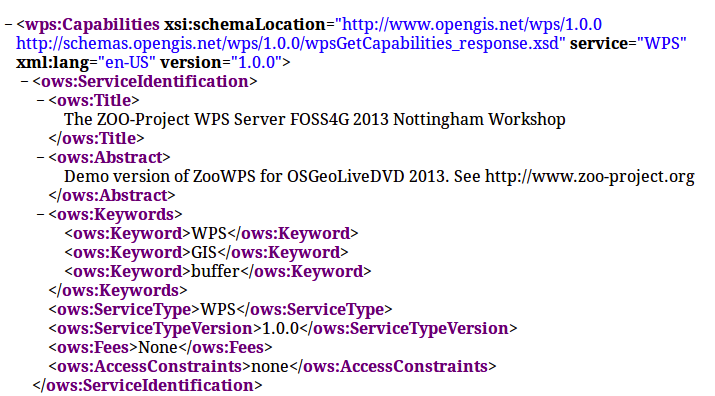

Configuration and ZOO-Kernel use¶
Table of Contents
ZOO-Project Installation¶
To be able to follow the current material, you will have to download and uncompress an archive containing the dataset, ZOO-Kernel and required services. It was made available specifically for this workshop and is available at : http://www.zoo-project.org/dl/ws2013-1.tar.bz2.
You should use the following commands to download then uncompress the archive and get it extracted with correct privileges:
wget http://www.zoo-project.org/dl/ws2013-1.tar.bz2
sudo tar -xvjpf ws2013-1.tar.bz2 -C /
psql -f /var/www/temp/ws2013.sql pgrouting
ZOO-Kernel Configuration¶
As already said in introduction, an OSGeoLive has been booted on your computer, allowing you to use ZOO-Kernel in a development environment directly.
Note
we will use ZOO-Kernel or zoo_loader.cgi script without any distinction
in this document.
General ZOO-Kernel settings are set in the main.cfg file located in the same
directory as the ZOO-Kernel, so in /usr/lib/cgi-bin/. You can see a typical
main.cfg content in the following:
1 2 3 4 5 6 7 8 9 10 11 12 13 14 15 16 17 18 19 20 21 22 23 24 25 26 27 28 29 30 31 32 33 | [main]
lang=en-US,fr-FR,ja-JP
version=1.0.0
encoding=utf-8
serverAddress=http://localhost/zoo/
dataPath=/var/www/data
tmpPath=/var/www/tmp
tmpUrl=../tmp
cacheDir=/var/www/cache/
mapserverAddress=http://localhost/cgi-bin/mapserv
msOgcVersion=1.0.0
[identification]
title=The ZOO-Project WPS Server FOSS4G 2013 Nottingham Workshop
keywords=WPS,GIS,buffer
abstract=ZOO-Project platform 2013 .See http://www.zoo-project.org for more informations
accessConstraints=none
fees=None
[provider]
positionName=Developer
providerName=ZOO-Project
addressAdministrativeArea=Lattes
addressDeliveryPoint=1280 Av. des Platanes
addressCountry=fr
phoneVoice=+33670082539
addressPostalCode=34970
role=Dev
providerSite=http://www.zoo-project.org
phoneFacsimile=False
addressElectronicMailAddress=gerald.fenoy@geolabs.fr
addressCity=Lattes
individualName=Gérald FENOY
|
The main.cfg file contains metadata informations about the identification and provider but also some important settings. The file is composed of various sections, namely [main], [identification] and [provider] per default.
- From the
[main]section settings are as follow: lang: the supported languages separated by a coma (the first is the default one),version: the supported WPS version,encoding: the default encoding of WPS Responses,serverAddress: the url to access your ZOO-Kernel instance,dataPath: the path to store data files (when MapServer support was activated, this directory is used to store mapfiles and data).tmpPath: the path to store temporary files (such as ExecuteResponse when storeExecuteResponse was set to true),tmpUrl: a url relative toserverAddressto access the temporary file,cacheDir: the path to store cached request files [1] (optional),mapservAddress: your local MapServer address (optional),msOgcVersion: the version for all supported OGC Web Services output [2] (optional).
The [identification] and [provider] section are specific to OGC metadata and
should be set [3].
Obviously, you are free to add new sections to this file if you need more. Nevertheless, you have to know
that there is some specific names you should use only for specific
needs: [headers], [mapserver], [env], [lenv] and [senv].
Warning
[senv] and [lenv] are used / produced on runtime internaly by the ZOO-Kernel and should be defined only from the Service code.
The headers section is used to define your own HTTP Response
headers. You may take a look at headers returned by web site such as
http://www.zoo-project.org by using curl command line tool for
instance and notice the specific heder X-Powered-By: Zoo-Project@Trac.
Warning
There is no reason to define basic headers such as
Content-Type or encoding as they will be overwritten at runtime by the
ZOO-Kernel.
The mapserver section is used to store specific mapserver configuration parameter
such as PROJ_LIB and GDAL_DATA or any other you want to be set to make
your MapServer working.
Note
the mapserver section is mainly used on WIN32 platform
The env section is used to store specific environment variables you want to be set
prior to load your Services Provider and run your Service. A typical example, is when your
Service requires to access to a X server running on framebuffer, then you will have to
set the DISPLAY environnement variable, in this case you would add
DISPLAY=:1 line in your [env] section.
The lenv is used to store runtime informations automatically set by the
ZOO-Kernel before running your service and can be accesses / updated from it:
sid: the service unique identifier,status: the current progress value (value between 0 and 100, percent),cwd: the current working directory of the ZOO-Kernel,message: an error message when returningSERVICE_FAILED(optional),cookie: the cookie your service want to return to the client (for authentication purpose or tracking).
The senv is used to store session informations on the server
side. You can then access them automatically from service if the
server is requested using a valid cookie (as defined in lenv >
cookie). The ZOO-Kernel will store on disk the values set in the
senv maps, then load it and dynamically add its content to the one
available in the main.cfg. The senv section should contain at
least:
XXX: the session unique identifier whereXXXis the name included in thereturned cookie.
conf["lenv"]["cookie"]="XXX=XXX1000000; path=/"
conf["senv"]={"XXX": "XXX1000000","login": "demoUser"}
That means that the ZOO-Kernel will create a file sess_XXX1000000.cfg in the
cacheDir and return the specified cookie to the client. Each time the client will
request the ZOO-Kernel using the Cookie, it will automatically load the value stored
before running your service. You can then easilly access this informations from your
service source code. This functionality won’t be used in the following presentation.
Testing the ZOO installation with GetCapabilities¶
You can request ZOO-Kernel using the following link from your Internet browser:
http://localhost/cgi-bin/zoo_loader.cgi?Request=GetCapabilities&Service=WPS
You should get a valid Capabilities XML document, looking like the following :
{kind=link}
Please note that some Process node are returned in the ProcessOfferings section, as somes are available already on OSGeoLive DVD. You can also run a GetCapabilities request from the command line, using the following command:
cd /usr/lib/cgi-bin
./zoo_loader.cgi “request=GetCapabilities&service=WPS”
The same result as in your browser will be returned, as shown in the following screenshot:

Invoking ZOO Kernel from command line can be helpful during development process of new Services.
Footnotes
| [1] | when you use GET requests passed through xlink:href the ZOO-Kernel will
execute the request only once, the first time you will ask for this ressource and it will
store on disk the result. The next time you will need the same feature, the cached file
will be used which make your process running faster. If cachedir was not
specified in the main.cfg then tmpPath value will be used. |
| [2] | since version 1.3dev, when MapServer is activated, your service can automatically return a WMS, WFS or WCS request to expose your data. Your can set here the specific version number you want to use to request your local MapServer setup. It depends mostly on the client capability to deal with specific OGC Web Services version. |
| [3] | since version 1.3dev, when MapServer is activated, the same metadata will be used for setting metadata for OGC Web Services. |
| [4] | If you’re not familiar with ZOO-Project, you can pass this part and come to it after the next section. |